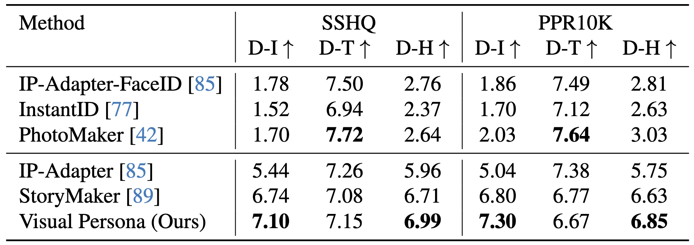
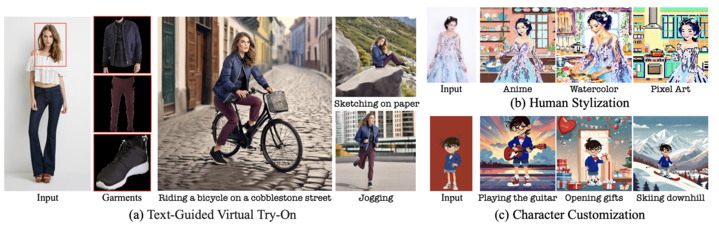

Abstract
We introduce Visual Persona, a foundation model for text-to-image full-body human customization that, given a single in-the-wild human image, generates diverse images of the individual guided by text descriptions. Unlike prior methods that focus solely on preserving facial identity, our approach captures detailed full-body appearance, aligning with text descriptions for body structure and scene variations. Training this model requires large-scale paired human data, consisting of multiple images per individual with consistent full-body identities, which is notoriously difficult to obtain. To address this, we propose a data curation pipeline leveraging vision language models to evaluate full-body appearance consistency, resulting in Visual Persona-500K—a dataset of 580k paired human images across 100k unique identities. For precise appearance transfer, we introduce a transformer encoder-decoder architecture adapted to a pre-trained text-to-image diffusion model, which augments the input image into distinct body regions, encodes these regions as local appearance features, and projects them into dense identity embeddings independently to condition the diffusion model for synthesizing customized images. Visual Persona consistently surpasses existing approaches, generating high-quality, customized images from in-the-wild inputs. Extensive ablation studies validate design choices, and we demonstrate the versatility of Visual Persona across various downstream tasks. The code and pre-trained weights will be publicly available.
Visual Persnona-500K Dataset

Data Curation Details: (a) When two randomly selected images of the same individual are not wearing the same outfit, the individual is excluded from the dataset. (b) Otherwise, to ensure full-body consistency across all images for each retained individual, we further refine the dataset using a sliding window approach.
Data Statistics: Our curated training dataset, Visual Persona-500K, consists of 580k images representing 100k individuals. (a) illustrates the distribution of the number of images per individual, with over 50% of individuals having more than four images, and shows example image-caption pairs from the same individual. (b) highlights the diversity of individuals based on facial attributes, including race, age, and gender, which are estimated by DeepFace. (c) showcases body structure diversity, segmented into five clusters—full-body, face, torso, legs, and shoes—categorized using a body-parsing method.
Model Architecture
Overall Architecture: Our network augments the input human image into body regions, which are encoded into local features by an image transformer encoder. A body-partitioned transformer decoder projects these features into learnable identity embeddings via cross-attention, followed by self-attention and MLP. After M iterations, the embeddings are concatenated to form a stacked identity embedding. The identity embedding and text embedding from detailed captions condition a pre-trained T2I diffusion model to synthesize a new image with the input identity. Only the body-partitioned transformer decoder and identity cross-attention module are trained.
Body Part Decomposition: It is important for the diffusion model to attend independently to each distinct body part from the input and map it to the corresponding part in the synthesized image. To achieve this, we augment the input image (a) into N distinct body images. We (b) leverage an off-the-shelf body parsing method to parse body regions and (c) group them into N-1 categories. (d) We then extract bounding box coordinates for each category and (e) resize them to the original input size.
Results


Qualitative Comparison on SSHQ and PPR10K Compared to prior works that focus on face identity preservation, or fail to capture the input's detailed appearance, Visual Persona accurately preserves the full-body appearance while generating diverse images based on text prompts.

Quantitative Comparison Visual Persona significantly outperforms previous methods in identity preservation (D-I), while maintaining comparable text alignment (D-T), ultimately achieving the best harmonic mean (D-H).
Human Evaluation Unlike previous methods that are biased toward text alignment or produce artificial outputs, Visual Persona surpasses these approaches in SC, which concurrently measures identity preservation and text alignment, as well as in PQ, which evaluates image quality, achieving the highest overall score O.
Applications
(a) Text-guided virtual try-on, (b) human stylization, and (c) character customization.